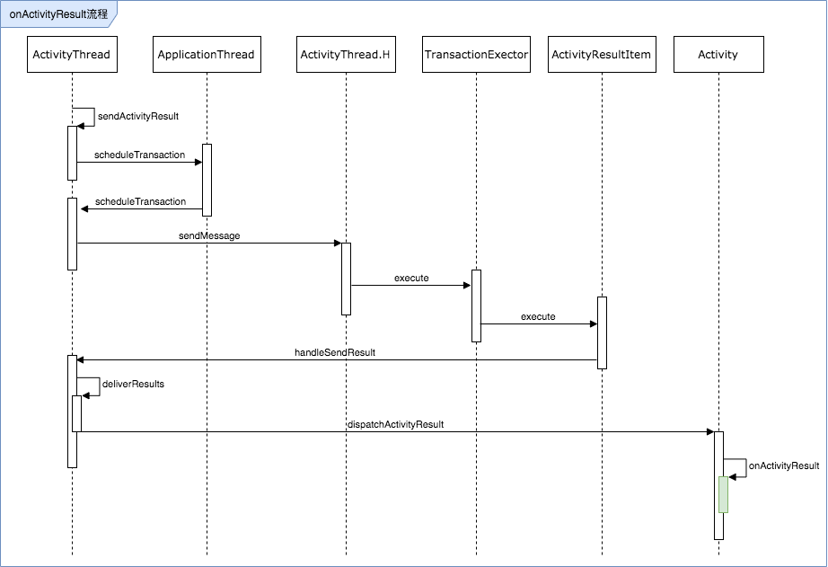
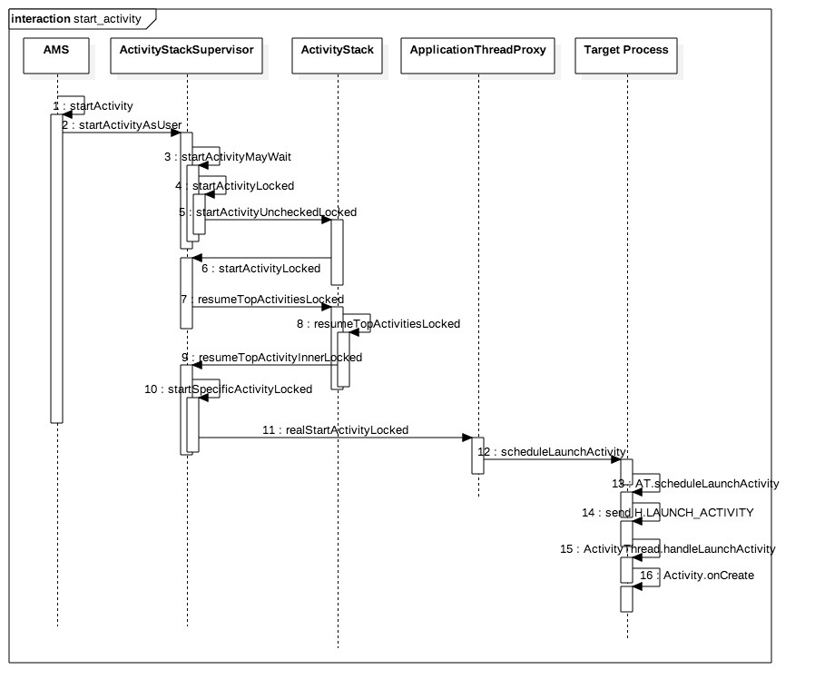

Activity启动流程
页面开发时需要使用Acitivty作为的UI载体，官方对于Acitivty给开发者开放了很多生命周期。本文分析启动一个Acitivty所经历的流程。
- Acitivty是如何创建的？
- Acitivty声明周期的执行，如onCreate被谁调用？
- Activity启动流程涉及哪些环节？
Activity启动
通过指定Intent，调用startActivity可以开启一个新的Activity，并且在Activity的onCreate执行时进行初始化等业务逻辑。

源码分析
首先Activity内调用startActivity后，会转而执行startActivityForResult，requestCode给了默认值-1。 为了方便阅读后面贴源码时会隐去部分细节代码。
- android.app.Instrumentation
- android.app.ActivityThread
public void startActivityForResult(@RequiresPermission Intent intent, int requestCode,
@Nullable Bundle options) {
// ...
options = transferSpringboardActivityOptions(options);
Instrumentation.ActivityResult ar =
mInstrumentation.execStartActivity(
this, mMainThread.getApplicationThread(), mToken, this,
intent, requestCode, options);
if (ar != null) {
mMainThread.sendActivityResult(
mToken, mEmbeddedID, requestCode, ar.getResultCode(),
ar.getResultData());
}
// ...
}
这里面主要做了两件事：
- 执行
android.app.Instrumentation的execStartActivity方法，并且返回了执行结果ActivityResult - 根据执行结果ActivityResult，调用android.app.ActivityThread的sendActivityResult方法
可以看到要分析start流程，实际上已经转移到了Instrumentation上面，它的链路比较长；这里我们先看一下对Activity启动结果的处理。
sendActivityResult流程
总结一下他的调用链路：
在ActivityThread.sendActivityResult执行后，通过H(Handler)内执行了transaction消息，调用了
ActivityResultItem的execute方法；该对象持有ActivityThread引用，执行Result分发逻辑，进一步调用Activity的
dispatchActivityResult方法，该方法会执行我们平时复写的onActivityResult。
调用关系如下：

ActivityThread.sendActivityResult
ClientTransactionHandler.scheduleTransaction
- ActivityThread.H => EXECUTE_TRANSACTION
- android.app.servertransaction.TransactionExecutor.execute
- ClientTransactionItem.execute
- 注意在这个场景下，ClientTransactionItem的实现类就是ActivityResultItem，所以执行的是ActivityResultItem.execute
- ActivityThread.handleSendResult
- ActivityThread.deliverResults
- Activity.dispatchActivityResult
- Activity.onActivityResult
其中1，3，6步骤代码如下：
public final void sendActivityResult(
IBinder token, String id, int requestCode,
int resultCode, Intent data) {
if (DEBUG_RESULTS) Slog.v(TAG, "sendActivityResult: id=" + id
+ " req=" + requestCode + " res=" + resultCode + " data=" + data);
ArrayList<ResultInfo> list = new ArrayList<ResultInfo>();
list.add(new ResultInfo(id, requestCode, resultCode, data));
final ClientTransaction clientTransaction = ClientTransaction.obtain(mAppThread, token);
clientTransaction.addCallback(ActivityResultItem.obtain(list));
try {
mAppThread.scheduleTransaction(clientTransaction);
} catch (RemoteException e) {
// Local scheduling
}
}
scheduleTransaction方法触发了ActivityThread的父类ClientTransactionHandler中的scheduleTransaction方法，发送了一个消息EXECUTE_TRANSACTION给H处理：
case EXECUTE_TRANSACTION:
final ClientTransaction transaction = (ClientTransaction) msg.obj;
mTransactionExecutor.execute(transaction);
// ...
ActivityResultItem.execute的实现如下：
@Override
public void execute(ClientTransactionHandler client, IBinder token,
PendingTransactionActions pendingActions) {
Trace.traceBegin(TRACE_TAG_ACTIVITY_MANAGER, "activityDeliverResult");
client.handleSendResult(token, mResultInfoList, "ACTIVITY_RESULT");
Trace.traceEnd(TRACE_TAG_ACTIVITY_MANAGER);
}
execStartActivity流程
启动流程相对更加复杂，Activity启动发起后，通过Binder最终交由system进程中的AMS来完成。
- 启动Acitivty的动作，经历了ActivityManagerNative（实现类为ActivityManagerService，简称AMS），ActivityStackSupervisor，ApplicationThread（父类是ApplicationThreadNative，有一个ApplicationThreadProxy代理类，是AIDL生成）后，通过跨进程Binder调用，将创建Activity的消息给到了目标App的进程。
- 目标App进程唤起后，最终由ActivityThread.H处理一个Acitivty Create消息，然后从消息携带的ActivityClientRecord中构造出Acitivty信息，用反射调用无参构造函数；最后执行Acitivty实例的onCreate方法。
- 在执行Activity.onCreate前有一段对Application创建检查的逻辑，保证一个App进程必须有一个Application实例，除此之外还有创建ContextImpl和attach的相关逻辑。
借用一张前人画好的流程图：

- intent startActivity
- startActivityForResult
- Instrumentation.execStartActivity ==> ActivityManagerNative.getDefault > ActivityManagerService实例, AMS继承AMN,AMN继承IBinder，单例模式返回 ==> AMS.startActivity > startActivityAsUser ==> checkStartActivityResult,检查返回值，根据code抛出常见异常信息，如Activity not found，pending intent is not Activity等 ==> ActivityStackSupervisor.startActivityMayWait > startActivityLocked > startActivityUncheckedLocked ==> ActivityStack.resumeTopActivitiesLocked > resumeTopActivityInnerLocked ==> ActivityStackSupervisor.startSpecificActivityLocked 首先获取进程记录ProcessRecord,如果不存在则启动进程，调用startProcessLocked; 如果存在，则启动页面，调用realStartActivityLocked ==> 在ActivityStackSupervisor.realStartActivityLocked中，调用app.thread.scheduleLaunchActivity app.thread的类型是IApplicationThread,继承自IInterface, 除了Activity启动还声明了很多其他Activity启动停止，Service等方法，实现类就是ActivityThread的内部类ApplicationThread ==> ApplicationThread的父类是ApplicationThreadNative,他有一个ApplicationThreadProxy成员，是系统为AIDL生成的代理类 ==> scheduleLaunchActivity实现：根据入参构造一个ActivityClientRecord，然后发送H.LAUNCH_ACTIVITY消息给Handler的实现类H ==> H.handleMessage > handleLaunchActivity, 执行performLaunchActivity得到Activity实例，返回执行handleResumeActivity，该函数内部执行步骤如下： ====> 1.首先从ActivityClientRecord构造主键信息，包括：获取ActivityInfo成员，检查并可选的构造PackageInfo，ComponentName，targetActivity ====> 2.在通过Instrumentation.newActivity， 通过类加载反射调用无参构造函数， 生成Activity， 类加载器冲PackageInfo中获取； 然后为ActivityClientRecord设置intent的Classloader； ====> 3.通过LoadedApk.makeApplication,取包application存在，不存在则调用Instrumentation.newApplication创建，并执行Instrumentation.callApplicationOnCreate ====> 4.创建ContextImpl,并执行activity.attach，进行初始化，attach内部包括：建立Context和Activity的联系，创建Window并关联Activity ====> 5.调用Activity.onCreate
- ApplicationThread.sendActivityResult
整个Acitivty启动流程结束
小结
通过分析Activity启动流程，可以发现他的嵌套转发虽然很多，很深，但是大的就是分为两块，套路模式：
- 在发起调用的App进程中，经历Instrumentation.execStartActivity，动作转交ActivityManagerService，ActivityStackSupervisor等，最终会把消息给到Binder处理
- 这里的Binder作为跨进程调用，他的接口类是ApplicationThreadProxy，将消息给到目标Activity的进程，再由ActivityThread.H的消息处理Handler完成对Activity的反射构造和方法调用。